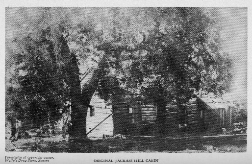

Inside Angel's Camp
Jackass Hill
Cabin

picture
courtesy of Mark Twain's Western
Years
I spent three months
in the log cabin home of Jim
Gillis and
his 'pard,' Dick
Stoker, in
Jackass Gulch [in Angel's Camp],
that serene and reposeful and dreamy and
delicious
sylvan
paradise."
Autobiography,
152
back
to exterior